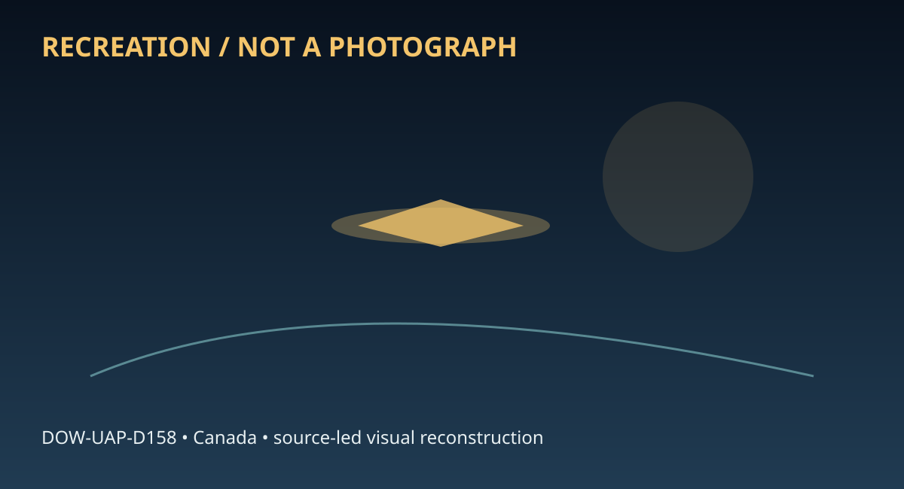

Release 07 / archival case file / DOW-UAP-D158
D158 Flying Object Report Canada 1953
This d158 flying object report canada places a anomalous report thread in a 1953 Canada record.
ID: DOW-UAP-D158
Filename:
DOW-UAP-D158-Flying_Object_Report_Canada-1953.pdfDate marker: 1953
Location: Canada
Agency or collection signal: Agency not resolved
Pages read: 4

RECREATION / NOT A PHOTOGRAPH. The diagram is an interpretive editorial aid, not source imagery.
What this document says
The opening page's extracted text begins: “Authority NND 57597 ;{,.,;,~~O;l~.,-;···~o 9.H"'.u~ t>l;;c~· 1:·} GC';;c.if!, 1..~·"D t,;;\ .-~. Af6C,1870 ~r :">_.. 1 k H (i-:....'"ll•."'-.),. :l~v. .. . (~en~ .. ::\ o\"~· • .I.' 19:-~ DJ.~ ;-i<'.:.llr of :rrt:oet:UlU,' \tf>n :. ri-'.li?f..l".:&'!;:>" 'US·I·i Col!'.~i!~~-=': .,.-:,.~ ~~~·--c: Cvra..~,;i» ~1t 1..:..:e 1::..,ro~ Co~~~~ ;..:.:...,. Tc~t,J:.;.c...•. 1.nvi::•i~{-t.A~r e-~tfl!';' :'',:,x f<:r~: t:~;~ ·. O;;;?ie C~lfl-:::-.. F¢.r.1t~1 JU"!' t~:,f.'.,:;WG •.',>'!t;rJ, ~.,;uJ.-:-oo ,~L~. L~~H'~ '..UG CQn· ~l'JJ.'.Jl'; P.~th. Ai:• ~.:i-:;i.u:l!.';:;:). (.D·,f) r f-t·~fli\~t.:. /%, Wr.•fau·3i.::'l-::l: A:i'l1:h .D--.l.r • "t9~ l'f: :m,;oJ.llg, >.i.t,O l,. '1110 fi'i~ r:-.t,e)--t. it ot.1.J.:1.it<:~u. :i.rr r.13-"l{h .t-..r,Q~ :4~t:', 11::'ft 20C ·2,. 26 }.~'l?l')t 1953, 1~Jro·~, ~~~ii ctoj~ct.o ;?i;p~~~.. ;.,._' • vJ S.h,0 ,.:c--..S!)l:~;-:j(l ·GO n h'"ileti:.a o::j~~.; ~· ~aol~a♦-bi'll:'. 1:lc.?u1 ui-, ~~..·J'.i ~~ r C.,:,~o~ • ~;:i~i~e jJ.t:;.1-t ,:!Ch blv, ;~,ln,':;., LS.gil·i~ •mo i:~!'3.;.,g tit;-:;-!i.r.-1.cm.llf •5~ ow a,.fo7-;\ t1-ui·n.t-l.(l w.-:u, {'1\) 'i;,_.,_1; f-j~B~ o:-l\--:t:. 0:-,M :•:·."...'.!1,~\.-;n ~ f:' thD o:,~\...-o,. t~ tl u ob;i;v.}t -~ t,.-.r- o.,r.@ : i;o h-';1 a. t'clllti.g ~t!.!r.”
Across the 4 pages, the recurring terms are anomalous report. Those details belong to this file, not to a generic case template. Page-level reading follows:
- Page 1: Authority NND 57597 ;{,.,;,~~O;l~.,-;···~o 9.H"'.u~ t>l;;c~· 1:·} GC';;c.if!, 1..~·"D t,;;\ .-~. Af6C,1870 ~r :">_.. 1 k H (i-:....'"ll•."'-.),. :l~v. .. . (~en~ .. ::\ o\"~· • .I.' 19:-~ DJ.~ ;-i<'.:.llr of :rrt:oet:UlU,' \tf>n :. ri-'.li?f..l".:&'!;:>" 'US·I·i Col!'.~i!~~-=': .,.-:,.~ ~~~·--c: Cvra..~,;i» ~1t 1..:..:e 1::..,ro~ Co~~~~ ;..:.:...,. Tc~t,J:.
- Page 2:
- Page 3: C (d) {.1.') J cne;cl o.: t • ,:.:, :.n nl~ ~ •· ( a) Ty·;m o ob:;e;:rv.,.'ion - roun • - ,.:...,u1 l. ' ,lllu tim0- 1 i;., :.rou.) of cd, \>in;! - r j .,:,3. ( 5) loc "-,ion of ohnorvar., .. ;"~1101' !7 )TYJ, Pi~· nco G::,or :o tir,or··, fr5.ncc Gco.r· ,3, .Ll.th.ih ...oli1mD~.. , J::1J C:s (6) Id ntH'yir g inf.01-matl.on of' all oo. crvcr. : (b) !..ill~ru:
- Page 4: (r) F~l>..'.,t,)".,:" .:..rl •.;'l::. . ,~ alf:,-!:'\i C l ..::i,.-,j;_O-llU ut •ti·!l.C tmC ?l•t ,Q of a:lJ.,htlln-;i (..~) ·1i.~~r;r•~il"r~ . r.:01r.'\t o.~· ·r .....;·101· Clr-1,l:i;,.;10:,::i .. ~l~ax 1 c1 t.~:::.ri~; rc1 t:ocn~ :'to'f-l \·er~ cl.,J1:-!•):r, v.i.dtilo. ,,:, . .a-p,;;1·'., :·:,.o:--: r,,,) i-r:d, .'·;5 ~--· .:s :cr:~h::-:..~ r~~~r..:. orr
Historical context and disclosure schema
Read in context, this record belongs to the 1953 information environment: Agency not resolved paperwork, a Canada setting, and the reporting conventions visible in the source. Its broader disclosure value is procedural as well as anecdotal: it shows how an observation, material question, investigation, or analytical program was routed, described, and preserved. That makes it comparable to other Release 07 records without collapsing unlike evidence into one event.
Evidence limits
The source establishes that this document exists and records what its authors or quoted witnesses wrote. It does not, by itself, prove the identity, performance, origin, or physical reality of the reported subject. Extraction preserves wording but cannot restore missing attachments, authenticate provenance, or independently validate testimony. Interpretations beyond the page-specific record remain hypotheses.
Source: supplied PDF in research/tranche-07. This article is a research aid, not a claim that the reported object was non-human.